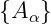

Sea  con α ∈ A una familia de conjuntos cerrados
Dem:
veamos que
|
| (1) |
es abierto, entonces por leyes de De Morgan
tenemos que
|
| (2) |
es abierto ya que ℜn\A
α por definició´on es abierto
y en clase se probó´o que la unió´on de conjuntos abiertos es conjunto abierto
por lo tanto
|
| (3) |
es conjunto cerrado
■
Dem:
veamos que
|
| (4) |
es un conjunto abierto.
En efecto, aplicamos leyes de De Morgan y tenemos que
|
| (5) |
es abierto, pues ℜn\A
α es abierto y la intersecció´on de conjuntos abiertos es
abierta
por lo tanto
|
| (6) |
es conjunto cerrado con n ∈ ℕ
■